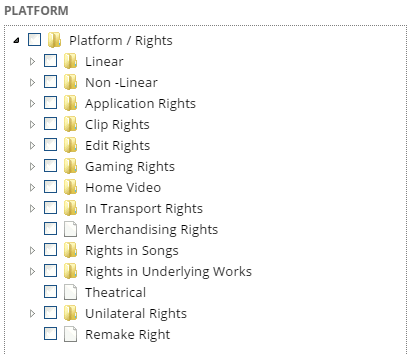
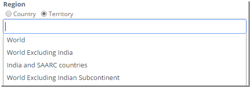
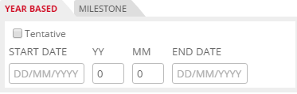
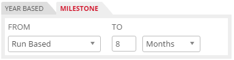
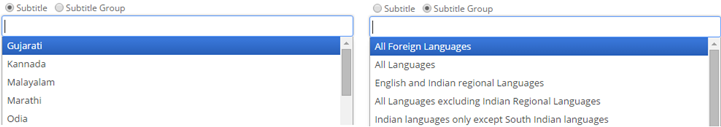
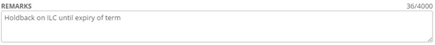
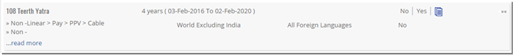
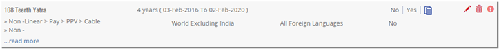


	<section>
		<article>
			<h2>Licensor Holdback<span></span></h2>
			<div>
				<p></p>
				<p>Licensor Holdback can be defined as restrictions applied by the Licensee/Assignee on the Licensor/Assignor.</p>

				<p>Click on Add button. User will be prompted with the below screen.</p>

				<p>System allows to add multiple movies for multiple platforms or single movie for multiple platforms or single movie for single platform or multiple movies for single platform.</p>


				<p>To select <b>Title</b>, click on Select Title drop down which shows list of added titles in General Tab. It looks like below.</p>

				<div class="triangle-border top">				
					
				</div>

				<p>To select required title, select the respective title or search for title and then select required ones.</p>

				<p><b>Platforms/Rights</b></p>

				<div class="triangle-border top">				
					
				</div>

				<p>It displays list of platforms in a tree structure. User needs to select respective platforms by selecting the respective check box. </p>

				<p><b>Note:</b> Platforms which are acquired as Exclusive in Acquisition Deal for respective titles will only be displayed here.</p>

				<p>Select either Country/Territory in <b>Region</b>. Depending on selection the drop down will be populated.</p>

				<p>To select country click on '<b>Country</b>' radio button and all the countries will be populated in the drop down list.</p>

				<div class="triangle-border top">				
					
				</div>

				<p>It shows list of all countries added in Country master.</p>

				<p>Select required countries by selecting respective from drop down. Otherwise user can search required countries and then select required ones.</p>

				<p>Similarly, Territories can be added for the respective right.</p>

				<div class="triangle-border top">				
					
				</div>

				<p>Select <b>VALIDITY</b> as either Year Based or Milestone by selecting the corresponding tab</p>

				<p>If user selects '<b>Year Based</b>' then user need to give Right Start Date and give Rights End Date which should be greater than start date.</p>

				<div class="triangle-border top">				
					
				</div>

				<p>If user selects '<b>Milestone</b>' then user needs to select if it's 'Run Based' or 'TC/OC OK' or 'Delivery of Material'. User will enter no of Days/Weeks/Months/Years from 1st Run or from TC/QC OK or from Delivery of Material respectively.</p>

				<div class="triangle-border top">				
					
				</div>

				<p>Check <b>Title Language</b> if it is acquired.</p>

				<div class="triangle-border top">				
					
				</div>

				<p><b>Subtitling</b> - User can select Language to put reverse holdback on from the drop down list.</p>

				<div class="triangle-border top">				
					
				</div>

				<p>Select required Subtitles by selecting respective check boxes. Otherwise user can search required subtitle using 'Filter' and then select respective check boxes. User can select all by clicking on 'Check all' or deselect all by clicking on 'Uncheck all'.</p>

				<p>Similarly <b>Dubbing</b> can be selected. </p>

				<div class="triangle-border top">				
					
				</div>

				<p>User can add a remark up to 4000 characters.</p>

				<p>Once all the required information is filled, Click Save to save the record or Click cancel to discard the record.</p>

				<p>After saving the record, the list page will look like this.</p>

				<div class="triangle-border top">				
					
				</div>

				<p>User will only see the processing icon. It means that the right is being validated against acquisition and other syndication rights. Once the process is complete, User will see Edit, Delete, View and Show Error button (if there are any errors during validation)</p>

				<p><b>Validation and Show Error:</b></p>

				<p>Please refer Syndication rights Validation and Show Error button for more info.</p>

				<p><b>Modify or Delete Reverse Holdback:</b></p>

				<div class="triangle-border top">				
					
				</div>

				<p>To modify Reverse HB, click on <b>Pencil Icon</b> and follow steps as done in Add Reverse HB.</p>

				<p>To delete Reverse HB, click on <b>Trash Icon</b>. It will show confirmation pop up "Are you sure you want to delete this Reverse HB?" Click 'OK' to delete rights. Click on 'Cancel' to cancel deletion.</p>

				<p><b>Note:</b>
				<p>- Adding Reverse Holdback on rights which are syndicated in Syndication Rights is not allowed.</p>

				<p>- If any syndication deal has Reverse Holdback for particular rights combination, then that right combination cannot be syndicated in other deal.</p>
				
			</div>
		</article>
	</section>